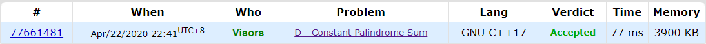
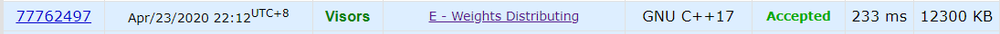

Codeforces Round 636 Div.3
碎碎念
最近开始参加Codeforces Round——注册四五年，才打四五场比赛。
不打打CF还不知道自己竟然这么菜，打个div3先是手速过慢被一众巨巨甩掉，后面偏难题目又A不掉不能实现弯道超车，菜的真实，后面还得加大力度，早日冲上1900分。
解题报告
D - Constant Palindrome Sum
这题看上去好想二分一波，但实际上并没有什么好的局部转移的规则。由于这场基本都是数学思维题，所以感觉这题也是这个方向。一开始被题面迷惑了一波，以为minimum是要每次改变最小的数，然后YY半天发现其实是最少次改变数……
思考的时候已经发现了Tutorial中的三点：
- We don’t need to change anything in this pair;
- we can replace one element to fix this pair;
- we need to replace both elements to fix this pair.
也想到要hash各个pair对应的x值，不过因为题意读错的原因老是把两个时期的思维过程搞混，导致本Round直线下分，冷静想想自己已经找到近似解了，比赛的时候还是有点不太理智。
其实思路非常简单，题目只考虑$a[i]+a[n-i+1]$，所以我们可以把$a[i]$和$a[n-i+1]$视为一对$pair$。
首先我们读入所有的$pair$，然后对于每对$pair$，我们可以考虑将其三种分类下的作用范围转化为区间涂色问题。线段树可以解决区间涂色问题，但是在这里前缀和更优，参考color the ball那道题目。
怎么将其转化为区间涂色问题呢？
对于第一种分类，该$pair$和就为其简单相加。
对于第二种分类，我们可以考虑固定$pair$的任意元素，改变另外一个元素。例如对于$pair<a,b>$，我们固定$a$，那么由于$b$的改动范围是$[1,k]$，所以整个$pair$的取值范围就是$[a+1,a+k]$，同理也可以固定$b$，改动$a$.
对于第三种分类，若设全局$U=[2,2k]$，那么两种都需要改动的范围就是$U-([a+1,a+k]\cup [b+1,b+k]\cup {a+b })$啦
从上述情况来看，我们可以声明两个数组，一个数组$pref$用来做前缀和，一个数组$cnt$来统计第一种分类出现的次数，这样就能知道取任意$x$时需要修改的次数，即$pref[x]-cnt[x]+2*(n/2-pref[x])$（第二种分类减去前缀和中多统计的第一种分类，再加上第三种分类）。
/**
* @Project Codeforces_Round__636__Div__3_
* @Filename Constant_Palindrome_Sum
* @Author Visors
* @Date 2020/4/22 22:23
* @Version 1.0
* @Description TODO
**/
#include <iostream>
#include <algorithm>
#include <vector>
using namespace std;
int T, n, k, ans;
int main() {
ios::sync_with_stdio(false);
cin.tie(0);
cin >> T;
while (T--) {
cin >> n >> k;
vector<int> a(n), cnt(2 * k + 1), pref(2 * k + 2); //cnt pref多留一个空间避免超界，pref本身有可能操作2*k+1，所以这里+2
for (auto &it:a) cin >> it; //Editor这么写的，我也学一波
for (int i = 0; i < n / 2; i++) cnt[a[i] + a[n - i - 1]]++; //下标0开始，n-i+1变成n-i-1
for (int i = 0; i < n / 2; i++) {
int l1 = a[i] + 1, r1 = a[i] + k; //固定左边
int l2 = a[n - i - 1] + 1, r2 = a[n - i - 1] + k; //固定右边
pref[min(l1, l2)]++;
pref[max(r1, r2) + 1]--;
}
for (int i = 1; i <= 2 * k + 1; i++) pref[i] += pref[i - 1];
ans = 1e9;
for (int x = 2; x <= 2 * k; x++) ans = min(ans, (pref[x] - cnt[x]) + 2 * (n / 2 - pref[x]));
cout << ans << endl;
}
return 0;
}

E - Weights Distributing
这题虽然是2400分，但我觉得我是可写的，只是比赛连看都没看一眼，前面还需压缩时间。
这道题题面比较长，但其实核心问题比较简单：
给定$n$个点$m$条边的无向联通图，先给定$m$个边权$p_i$，问如何分配边权，能使从点$a$到点$b$，再从点$b$到点$c$走过的权值最小。
初读题目，可能会觉得这题过水——跑一遍从$a$到$b$的最短路，再跑一遍从$b$到$c$的最短路，然后贪心从小到大取边权，如果两个最短路中间有重复路段就优先取重复的部分。
这种想法有可取之处，即把最终选取的路径分为了两类：
- 两段路有重合部分
- 两段路没有重复部分
但却忽视了关键问题，即求得的最短路很可能有多条，而选择其中的不同条，会产生不一样的分组结果。其实我们希望重复部分尽量多，但沿用上一方法很难处理。这时候如果把路径的选取看成这样：设两段路的交点为$x$，那么上面的两类可以被描述为：
- $a$->$x$->$b$->$x$->$c$
- $a$->$b(x)$->$c$
两种情况对应下图：
graph LR;
subgraph situation1
a((a))-->x((x));
x((x))-->b((b));
b((b))-->x((x));
x((x))-->c((c));
end
subgraph situation2
A((a))-->B((b=x));
B((b=x))-->C((c));
end
于是我们很容易想到求出$a,b,c$到各点的最短路，枚举$x$，找到最小的$dist(a,x)+2*dist(b,x)+dist(c,x)$即为题目要求的答案。
因为我们一开始只需要求边数即边权为$1$的最短路径的长度，所以用BFS就可以处理。
/**
* @Project Codeforces_Round__636__Div__3_
* @Filename Weights_Distributing
* @Author Visors
* @Date 2020/4/23 21:03
* @Version 1.0
* @Description TODO
**/
#include <iostream>
#include <vector>
#include <algorithm>
#include <queue>
using namespace std;
const int oo = 1e9 + 7;
int T, n, m, a, b, c;
vector<vector<int>> G; //内存占用大的声明在全局
void bfs(int v, vector<int> &dist) { //这里传的是引用，不会爆栈
dist[v] = 0;
queue<int> q;
q.push(v);
while (!q.empty()) {
int t = q.front();
q.pop();
for (auto it:G[t]) {
if (dist[it] == oo) {
dist[it] = dist[t] + 1;
q.push(it);
}
}
}
}
int main() {
ios::sync_with_stdio(false);
cin.tie(0);
cin >> T;
while (T--) {
cin >> n >> m >> a >> b >> c;
vector<int> p(m + 1);
for (int i = 1; i <= m; i++) cin >> p[i];
sort(p.begin() + 1, p.end()); //从大到小排序
vector<long long> pref(m + 1); //求前缀和，方便后面快速取最小的路径
for (int i = 1; i <= m; i++) pref[i] = pref[i - 1] + p[i];
G = vector<vector<int>>(n + 1);
for (int i = 1, s, t; i <= m; i++) {
cin >> s >> t;
G[s].push_back(t);
G[t].push_back(s);
}
vector<int> distA(n + 1, oo), distB(n + 1, oo), distC(n + 1, oo);
bfs(a, distA);
bfs(b, distB);
bfs(c, distC);
long long ans = 1e18;
for (int x = 1; x <= n; x++) {
if (distA[x] + distB[x] + distC[x] > m) continue; //分不了直接跳过
ans = min(ans, pref[distB[x]] + pref[distA[x] + distB[x] + distC[x]]);
// = 2 * pref[distB[x]] + (pref[distA[x] + distB[x] + distC[x]] - pref[distB[x]])
}
cout << ans << endl;
}
return 0;
}
